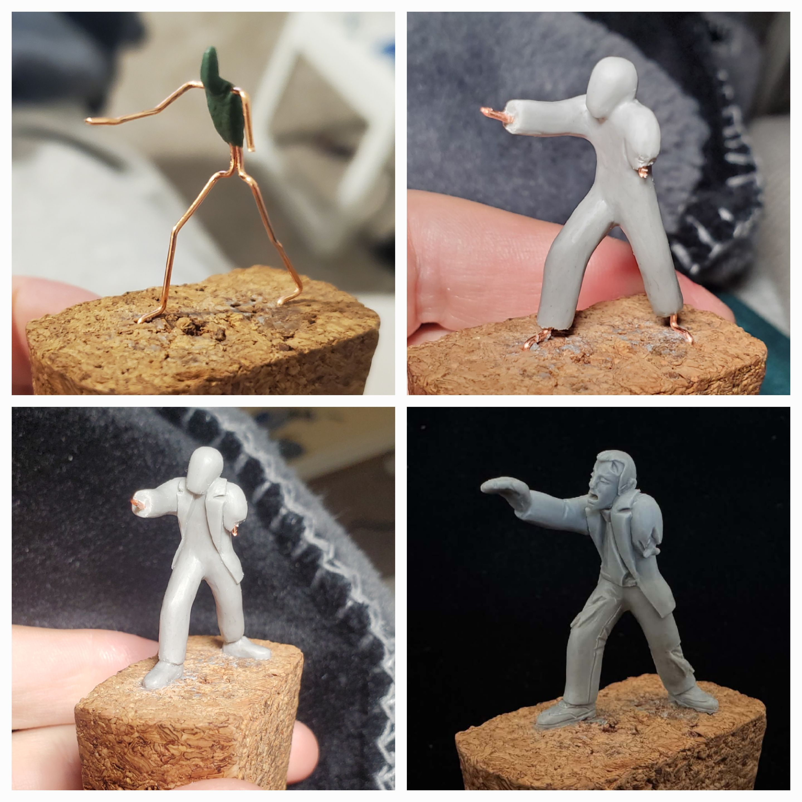
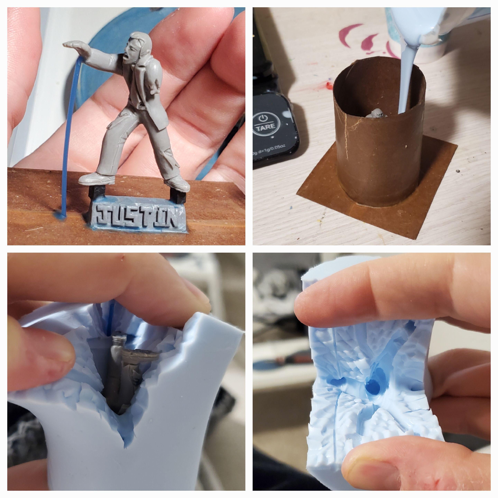
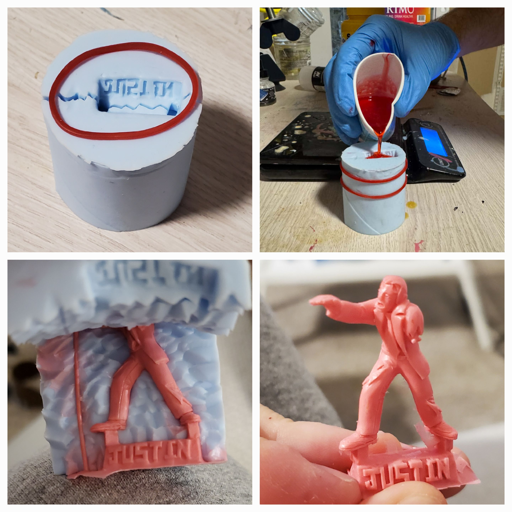

How It's Made
Here's how I make my minis.

Sculpting
I start with an armature made of copper wire and green stuff. I like to support the head with green stuff so it's easy to cut off later (if needed) I then pose the armature and stick it in a piece of cork. Now I can start sculpting!
I use beesputty triple firm for most of my sculpting since it's a little tacky and will stick to the armature on its own. From here, I go on building up the general body forms and adding fine details. This is the longest part of the process and usually takes me around 30 hours per mini. It's also the part I enjoy most. Once I'm done, I bake the mini in the oven and can start the next step.

Molding
The next step to producing a miniature is to make a mold. First, I add vents (the blue wax stick) and sometimes have to cut off pieces of the miniature to make sure the mold will fill properly in the next step. I add pour spout with my name on it and then wax-weld the whole thing to a cardboard base. I wax-weld on one of my high-tech mold cases (center of a toilet paper roll dipped in beeswax) and I'm ready to pour some rubber!
I calculate how much rubber I'll need based on the volume of my mold case and the density of the rubber. Most people just estimate but this saves me money and rubber! I mix up the rubber and then stick it in my vacuum chamber to suck out all the air I whipped into it while mixing. After the vacuum, I carefully pour the rubber into the mold case and wait for it to cure.
After 4 hours or so, the rubber is ready to cut. I make jagged cuts to help the mold lock back together later. Also, I only cut enough of the rubber to get the piece out. This helps reduce mold lines. I never cut the mold in half. This style of mold is called a one-piece-cut mold. It's less work and produces better results than a 2 part clay-up mold, and I'll die on that hill :)
With the mold cut, we're ready for the last step.

Casting
First, I put some rubber bands around the mold. Notice these bands are only slightly smaller than the mold itself. You want gentle, even tension in the bands that helps the mold close up but not so much that it deforms the mold. The circular shape of the mold helps to get that nice even tension.
Next, I mix up the resin and add a dot of dye. I fill the mold and then stick it in my vacuum chamber for about 90 seconds or until I see it start to foam. This helps suck out any trapped air in the mold. Then I quickly take it out of the vacuum chamber and put it into the pressure pot. The pressure helps suppress resin foaming and further reduces the size of any air bubbles still left in the mold. I use a polyurethane resin with a 9 minute working time so I have time to do all of this. After 30 minutes in the pressure pot and a little clean-up, the mini is ready!